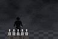

Espadas de Pedra
- NovoFoi adicionada uma carta que transforma o chão de pedra à sua volta em 5 espadas. Elas sobem e ficam flutuando sobre a sua cabeça, apontadas para a frente, por 20 s.
- NovoEnquanto elas estão no ar, sua arma some, e cada tiro lança uma espada, reta e rápida, para onde você mira. Cada espada que acerta tira 100 de vida.
- NovoCom a carta ativa, o R trava a mira num inimigo a até 40 m, e as espadas são lançadas onde ele vai estar quando chegarem. O travamento se solta se ele passar de 50 m.
- NovoA carta volta 40 s depois.